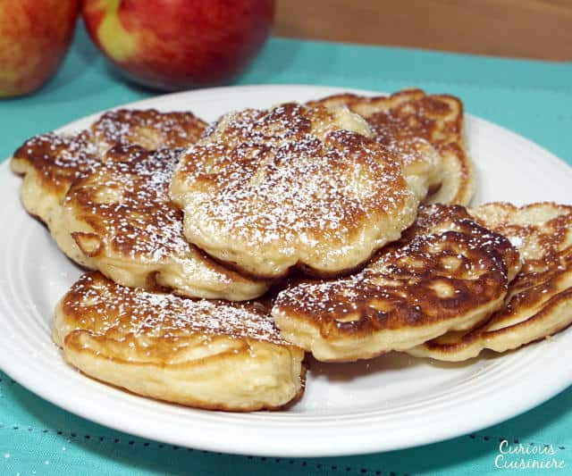

Polish Apple Pancakes

Description
Polish apple pancakes(Racuchy z Jablkami) are thin crepes that can be filled with sweet or savory ingredients.
Ingredients
- 2 cups milk
- 2 cups all purpose flour
- 2 eggs
- 1 tbsp. white sugar
- 1 tsp. ground cinnamon
- 1/2 tsp. baking soda
- 1 pinch salt
- 2 apples: peeled, cored and diced
- vegetable oil
- 2 tbsp. powdered sugar
Steps
- Combine milk, flour, eggs, sugar, cinnamon, baking soda, and salt in a large bowl; beat with an electric mixer until smooth and creamy. Mix in apples.
- Heat 1 tbsp. oil in a skillet over medium-high heat.
- Drop batter by large spoonfuls into the pan and cook until the edges are dry and the bottom is browned, 3 to 4 minutes. Flip and cook until browned on the other side, 2 to 3 minutes. Repeat with remaining batter.
- Dust pancakes with powdered sugar.